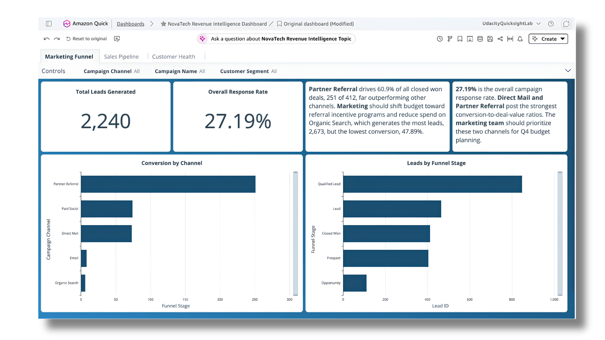
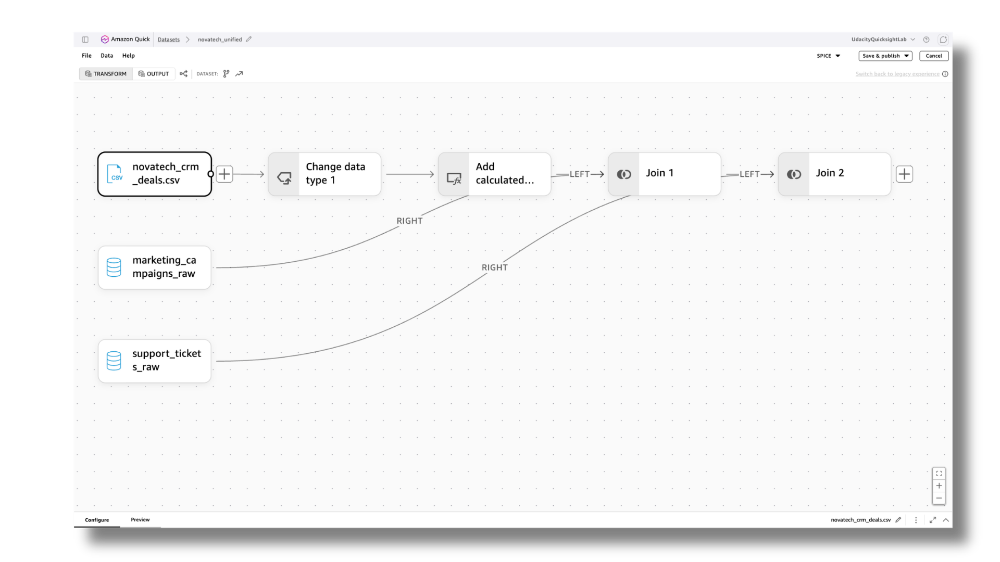

NovaTech Revenue Intelligence
AWS Data Pipeline & Business Intelligence Dashboard
Overview
Developed a unified Business Intelligence dashboard using AWS and Amazon QuickSight. It aggregates raw data from CRM deals, marketing campaigns, and support tickets to provide clear visibility into the marketing funnel, sales pipeline, and customer health.
The Problem & Solution
Problem: Scattered financial and marketing metrics across multiple platforms make it difficult to spot real-time revenue trends, calculate conversion rates accurately, and allocate budgets effectively.
Solution: Engineered a centralized data pipeline that merges disparate datasets into a single source of truth, outputting actionable insights directly to stakeholders.
Build Process
- Step 1: Data Integration
Merged raw CSV datasets (Deals, Campaigns, Tickets) using native joins. - Step 2: Data Cleaning
Standardized data types and added calculated fields for cross-referencing. - Step 3: Visualization
Built interactive charts tracking Total Leads, Response Rates, and Conversions. - Step 4: AI Insights
Configured Agentic AI topics to generate automated natural language insights.
Gallery
Final BI Dashboard Interface:

Backend Data Preparation Pipeline:
